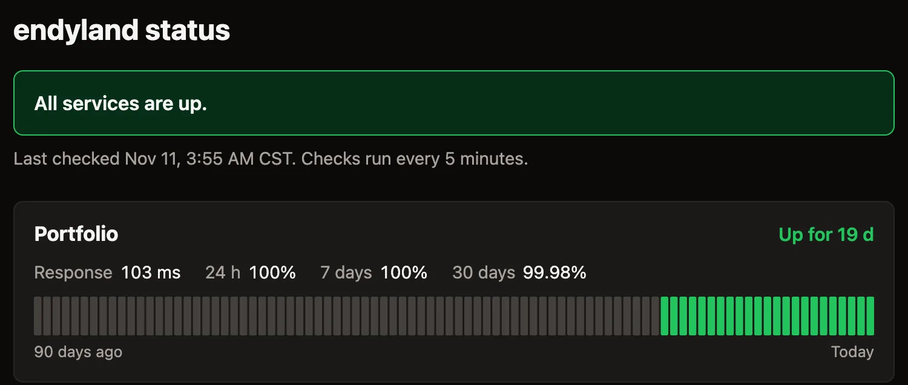

endyland hosting and status page
Cloudflare hosting for endyland.com, a status page that checks each service every 5 minutes, and deploys that wait for the site checks.
October 2026. Cloudflare Pages, Workers, tunnels and D1, with GitHub Actions. The repository is private.

What it does
The site is plain files on Cloudflare Pages. The small services around it run as Cloudflare Workers or behind Cloudflare tunnels, so nothing is opened on the home network. A status page watches all of it. The goals were to know within 5 minutes when the site is down, and to block a deploy that fails the site checks.
On November 11, 2026 the status page showed the portfolio up for 19 days in a row. The 24-hour and 7-day figures were 100%, and the 30-day figure was 99.98%. Monitoring had run for 23 of those 30 days.
A change goes live
- Push to mainOnly this branch deploys.
- Site checksLinks, image sizes, inline scripts, security policy.
- DeployTo Cloudflare Pages.
- VerifyAsk the live site which commit it serves.
A push to main.
A push to the main branch starts the site checks. They look for broken links, missing image sizes, inline scripts and a loosened security policy. If they pass, the site is deployed to Cloudflare Pages. A last step asks the live site which commit it is serving and fails if it is the wrong one, which catches a deploy that reported success but did not publish.
Only the main branch can deploy. The deploy token can edit Pages and nothing else, and only that branch can read it.
The status page
A Cloudflare Worker wakes every 5 minutes. It checks each service at the same time with a 10 second limit and no redirects followed, and stores the result in a small D1 database. A service is up only if every one of its checks passes. The portfolio, for example, must answer 200 with a content security policy, and its security.txt file must be present.
The page reads only small summary tables and caches answers for 60 seconds. It shows the last 24 hours, 7 days and 30 days as percentages, a bar for each of the last 90 days, and a list of incidents. An incident opens when a service goes down and closes when it comes back.
Slower checks on GitHub
A scheduled job checks every address and certificate every 30 minutes. A second job runs on Mondays and checks that the security.txt date is still valid, the sitemap is right, and the HSTS and CAA settings are in place. Both only report. They never block a deploy.
Security settings
Two connection settings were tightened in a scripted pass. The state before it was saved, so the change can be rolled back.
| Setting | Before | After |
|---|---|---|
| Always use HTTPS | Off | On |
| Minimum TLS | 1.0 | 1.2 |
The pages send a strict content security policy with no inline scripts and refuse to be framed. The domain sends no email, and its records say so, which stops anyone from spoofing it.